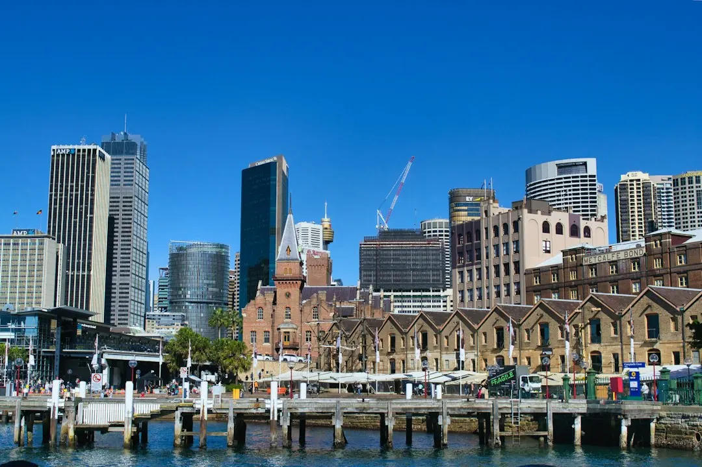

Sydney property conveyancing commonly involves contract review, searches, transfer duty calculations and electronic settlement through PEXA. Published guidance covers 13 service areas, local work across 26 Sydney suburbs and fixed professional fee quotes, with disbursements and government charges listed separately. Routine professional fees are described as ranging from a few hundred to around $1,500. Most private treaty residential purchases have a five business day cooling-off period, but auction purchases do not.
For buyers and sellers comparing sydney conveyancing services, the practical decision is choosing the right legal professional, understanding what the fixed fee includes and checking the contract before deadlines become urgent.
Sydney Conveyancing Services Explained
Readers comparing options can review Sydney Conveyancers as a starting point for understanding the work involved, then match the professional to the transaction. A standard purchase, sale, family title transfer, off-the-plan contract and commercial premises each create different documents and questions.
For a buyer, the work includes reviewing the contract, conducting searches and managing settlement. For a seller, it includes preparing the contract, attaching prescribed disclosure documents and handling settlement after the sale. A first home buyer may also need guidance through the First Home Buyers Assistance Scheme and the First Home Owner (New Homes) Grant, both identified in the published service information.
Ask for the scope in writing before engaging anyone. Useful questions include:
- Who will review the contract and explain unusual clauses?
- Which searches and government charges are included or separate?
- Who will communicate before exchange and on settlement day?
- Is the matter suitable for a licensed conveyancer, or does it need a solicitor's wider legal advice?
Cost clarity and disbursements
The published Sydney guidance describes routine professional fees as typically ranging from a few hundred to around $1,500. That is the professional charge, not necessarily the complete transaction cost. Government charges and disbursements, including title searches and registration, are additional and vary by property.
A fixed-fee quote is useful only when its boundaries are clear. Compare the professional fee, the listed disbursements, transfer duty treatment and any extra work that could arise from an unusual contract, delayed settlement or additional correspondence. The guidance says fixed professional fees and separate charges should be confirmed in writing before commitment.
Transfer duty should also be treated as a separate calculation rather than folded into a vague estimate. The published cost tools are intended to help estimate transfer duty and fixed-fee costs, while the engaged professional can explain what applies to the particular property and transaction.
Timing before exchange and settlement
Contract timing determines when legal review is most valuable. For a private treaty residential purchase in NSW, the published guidance describes a five business day cooling-off period beginning at exchange and ending at 5pm on the fifth business day. It also states that the period does not apply to property bought at auction.
That distinction changes the buyer's preparation. An auction buyer should arrange contract review before bidding, because waiting until after a successful bid may leave no cooling-off period. An off-the-plan buyer should ask about sunset clauses and disclosure rules that apply while the property is being built. A seller should confirm that the contract and prescribed disclosure documents are ready before marketing or accepting an offer.
Request the expected milestones in plain language: contract review, searches, exchange, duty and settlement preparation. Settlement is completed online through PEXA in the published process, with documents and ownership transfer handled electronically.
Choose the legal professional for the matter
In NSW, the published guidance says conveyancing may be carried out by a licensed conveyancer regulated by NSW Fair Trading under the Conveyancers Licensing Act 2003, or by a solicitor. A licensed conveyancer specialises in property transfers. A solicitor may also advise on related legal issues.
The choice should follow the transaction rather than a label. A routine residential sale may call for a focused transfer process. A commercial purchase may involve leases, GST, due diligence and commercial settlement. A title transfer within a family may need careful attention to the ownership change and the documents supporting it.
Before instruction, ask who provides legal advice, who handles searches, how questions are escalated and whether the quoted work covers the transaction's unusual features. The published material states that legal work and advice are provided by the independent conveyancer or solicitor engaged for the matter.
A practical document checklist
Prepare the basic information before requesting a quote so the professional can assess the matter accurately. Include whether you are buying, selling or transferring a title, whether the property is residential or commercial, and whether it is an auction, off-the-plan or private treaty transaction.
- Contract of sale or draft contract, if available.
- Property address and the relevant suburb or postcode.
- Names of all parties who will sign.
- Known lease, disclosure, title or finance details.
- Any settlement date, auction date or special clause that needs review.
Keep a written record of the quoted professional fee, separate charges, required documents and next deadline. A quote response within 24 hours is published for the service, but the transaction still depends on receiving complete information and meeting its legal dates.
- Identify the matter. State whether the transaction is a purchase, sale, title transfer, off-the-plan matter, auction or commercial property.
- Send the documents. Provide the contract, property details, parties and any known deadline so the professional can assess the scope.
- Compare the quote. Separate the fixed professional fee from transfer duty, searches, registration and other disbursements.
- Confirm the milestones. Record the review, exchange, settlement and document deadlines before signing or bidding.
- Complete settlement. Follow the conveyancer or solicitor's instructions for electronic settlement and ownership transfer through PEXA.
| Transaction | Priority before commitment | Useful question |
|---|---|---|
| Private treaty purchase | Contract review and cooling-off terms | When does the cooling-off period begin and what does it cover? |
| Auction purchase | Pre-bid contract review | Which risks or unusual clauses should be understood before bidding? |
| Off-the-plan purchase | Sunset clauses and disclosure rules | What obligations apply while the property is still being built? |
| Commercial property | Leases, GST and due diligence | Which commercial documents and investigations are included? |
Common questions
How much does a routine conveyance cost in Sydney? The published guidance describes routine professional fees as typically a few hundred to around $1,500. Government charges and disbursements, including searches and registration, are additional and vary by property.
Can a licensed conveyancer handle a NSW property transfer? Yes. The published guidance says a licensed conveyancer regulated by NSW Fair Trading can carry out conveyancing. A solicitor can also handle the matter and advise on related legal issues.
Is there a cooling-off period after a NSW auction purchase? The published guidance says the five business day cooling-off period for most private treaty residential purchases does not apply to property bought at auction. Contract review before bidding is therefore important.
What should an off-the-plan buyer ask about? Ask the engaged professional to explain the contract, sunset clauses and disclosure rules that apply when buying before the property is built.
This guide covers NSW residential, off-the-plan, auction, family title transfer and commercial conveyancing questions, costs and timing.